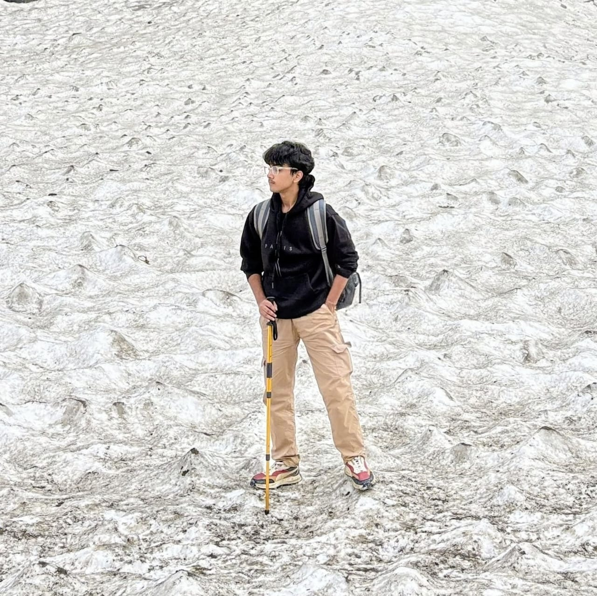

About the Developer

Hi, I am Ahmad Faraz, a Computer Engineering undergrad at ZHCET, AMU. I built Project Eigen as a way to track my academic preparation, rooted in my passion for Mathematics. It grew into a system to track progress in Mathematics used across AI/ML, DSA, Data Science, and Quantitative Finance.
Project Style
Math-first, minimal, and modular. Project Eigen uses a clean dark-space interface, unit-based structure, and focused tracking flows designed for consistency over complexity.
Build Focus
Practical learning through iteration. The focus is on turning lecture plans and problem sets into a measurable system for steady progress across university prep, AI/ML math, DSA, coding, Data Science, and Quantitative Finance.